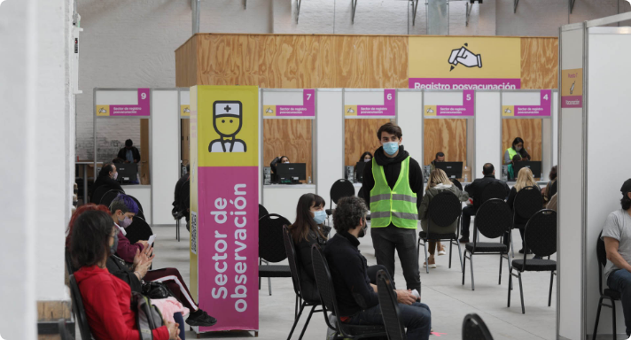

“Mi nombre es Oscar, tengo 59 años, por eso me estoy vacunando. Estaba con el celular y dije: “Voy a probar”. La verdad es que el registro fue facilísimo”.
Al igual que Oscar, ya son muchas las personas que transmiten su experiencia y expresan su emoción por haber recibido las vacunas en los Centros de Vacunación de la Ciudad, los cuales están especialmente acondicionados y distribuidos de maneran estratégica a lo largo del territorio porteño.
“Llegué, me recibieron, me tomaron la temperatura, me registré. Ahora tengo aplicada la vacuna”, contó Jorge, de 52 años, mientras sonreía y sostenía su certificado de vacunación.
Este es un apartado del texto que se quiere destacar por su importancia dentro del contenido de la página.
Nombre del autor de la cita
Para facilitar el traslado de los vecinos y vecinas, los Centros de Vacunación están ubicados en clubes, edificios de gobierno y centros culturales. Cuentan con un equipo de más de 2 mil personas y cada uno de esos puntos cumple con todas las medidas de bioseguridad correspondientes. Además, están equipados con sistemas de refrigeración adecuados para la correcta conservación de las vacunas.
El comentario entre los vecinos se reitera: alegría y tranquilidad por recibir las dosis. “Por nosotros, por nuestros seres queridos hay que vacunarse”, opinó Claudia de 53 mientras que Ricardo, de 56, le recomendó a los ciudadanos: “¡Que se anoten, que se vacunen porque es para el bien de todos!”.
Desde el 29 de diciembre, 1.243.837 personas recibieron la primera dosis de la vacuna Sputnik-V, Sinopharm o AstraZeneca. Del total, 335.306 ya completaron la inmunización con el segundo componente. Así, en el territorio porteño ya se aplicaron 1.579.143 vacunas.
En tanto, la Ciudad puedan recibir la vacuna contra el COVID-19. En paralelo, se continúa con el último tramo de la 1° Etapa (personal de salud del sistema público, privado e independiente), de la 2° Etapa (mayores de 70 años y residentes de geriátricos), de la 3° Etapa (personas de 60 a 69 años), de la 4° Etapa (personal estratégico), de la 5° Etapa (personas con condiciones de riesgo) y de todos los vecinos mayores de 45 años.
Fotos GCBA